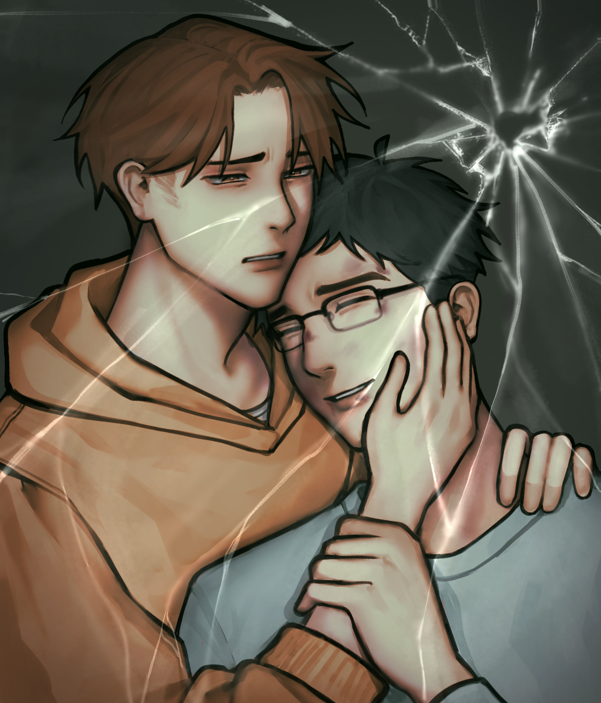
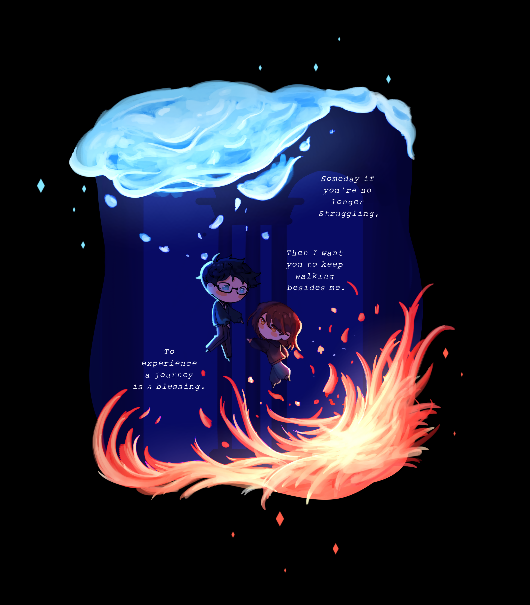
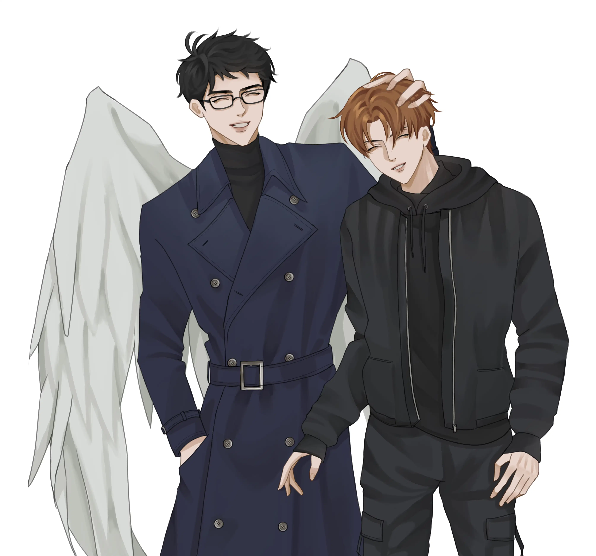
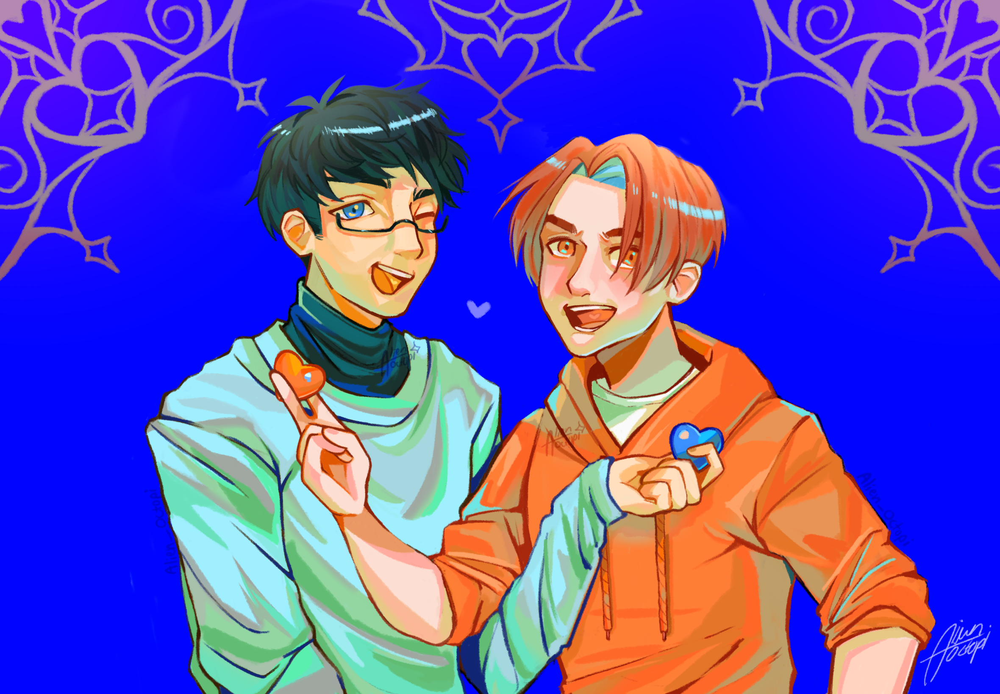
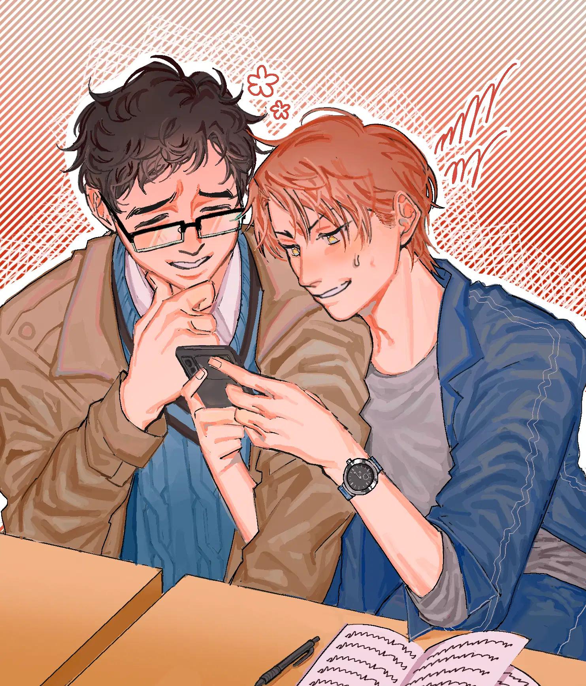
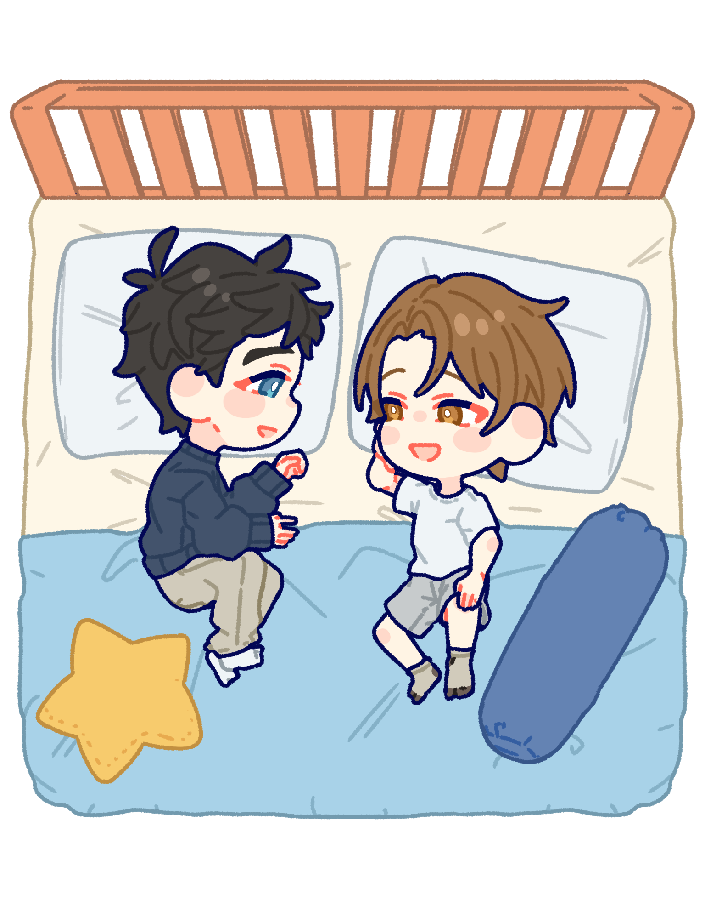

At that time, Al was often thrashed by "The Author", he's in verge of disappearance (as an OC), so I make him bruised a bit. ... Actually, my "Want to Buy" post was specifying BL artist but I ended up choosing someone in gore niche just because the way they draw male character suited my taste. Still, solid art style.

I saw a chibi artist with good background sample so I was like, "hm why not". Admittedly the brief I gave to them was difficult so it went through several revision several times until I feel somewhat okay with it. The idea was Al will always help Lie despite the mental health crisis the latter experiencing.

Quite simple: I saw 'Want to Sell' post with reasonable price and within my taste.. I grabbed them. I started to admit that I have preference in manhwa style? A pat and Al in angel form.

My old online acquittance needed some money, so I ordered from her :} (Albeit I had already spent money on commission days before). She delivered it so quickly. Al is always the one being affectionate with Lie, so what if Lie gives back in return? Hence the bouquet.

I met Mozzy in Art Fight server and adored her art. She was quite popular but I wanted an art piece from her. I told her to surprise me for the concept, she went out for unusually bright—almost neon colors. The detail of them exchanging hearts is quite neat.

They were telling people in a server about opening commission. Judging from their Twitter posts.. too good to be true? It's very manhwa, ..me being me ..I ordered. However upon shading stage I found it lackluster, so I took matter in my own hands and render the whole thing by myself (I asked permission ofc). The pose and lineart is already superb, y'know. I want to maximise the potential.

I saw her posting art on Hujan Kata server, at first it was a casual compliment but I rarely fancy someone else's art there. She's really good at choosing color scheme, the first artwork I saw from her was pink-ish so I requested sweet atmosphere. They are giggling together because they see weird stuff online. "WHAT THE FUCK IS THIS" —Lie.

I was checking out COACI's server, chibi commission don't usually pique me but this artist's lineart is so satisfying to look at, it scratches my brain in good way. The slot was full though (they didn't update the post), so I told them to put me in waitlist until they're free. Well, worth it. I wanted bed theme because they tend to chat before sleep.